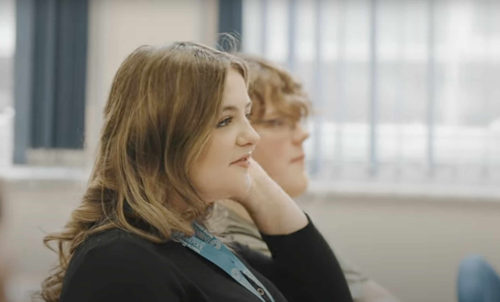

I've always been passionate about STEM, especially as a woman in science. The KQ Intern Programme's focus on innovation, collaboration, and real-world impact is exactly what interests me. I want to contribute, learn, and be inspired.
My Projects

Fill-Finish Manufacturing Project
This project aimed to improve fill-finish accuracy in pharmaceutical manufacturing through data analysis and predictive modelling. I used Python libraries including pandas, seaborn, scikit-learn, and RandomForestRegressor to identify key variables and reduce variability in production outcomes.
The project was overseen by Gwyn Jones, Head of Process Mechanical of the PM Group, who provided technical feedback and industry insight.
"I was genuinely in awe of the detailed research undertaken, presentation skills, intuition and the cross-discipline thinking. Some of the ideas had me stumped. Issues on data security, ethical issues of AI decision models on safety critical equipment and a whole host of others." – Gwyn, PM Group

School Website Project
Designed a responsive website from scratch using only pure HTML/CSS (like this one!) for a school presentation. It included interactive pages and clean UI design that enhanced user experience and information accessibility.

Role Model in school
Beyond technical skills, I’m passionate about representation in STEM. As a young woman in tech, I strive to be a role model in my school community. I was recently featured in our school's introductory video to inspire more students, especially girls, to pursue technology and other science-related subjects.
"Jess has shown exceptional resilience to handle commitments at home with attending school and engaging fully with activities in school. She is always willing to be involved with our events, and had an excellent input to our introductory video to the school. She is an excellent role model for girls interested in pursuing STEM subjects at sixth form level." – Dave, Deputy Headmaster

Tennis Ball Spin Physics Experiment
Led a physics investigation to test how spin rate affects velocity at constant applied force using the magnus effect. We used software, video tracking, and mechanics knowledge to analyse results and draw conclusions about the relationship between spin and trajectory.